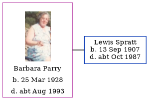

Barbara Beryl Spratt (née Parry) 1928 - c1993
[ Home ] | [ Calendar ] | [ Surnames Index ] | [ Family History ]Barbara Parry, the wife of Lewis George Spratt (the first cousin once-removed on the father's side of Nigel Horne), was born on Mar 25, 1928<span class="citation">1</span>. She married Lewis (a chief stage electrician) in Cardiff, Glamorgan, Wales around May 1945<span class="citation">2</span>.<p>She died <i>c.</i> Aug 1993 in Thanet, Kent, England<span class="citation">1</span>.
Citations
- England & Wales deaths 1837-2007 - Findmypast
- England & Wales marriages 1837-2008 - Findmypast
Media
Barbara Beryl Parry
England & Wales marriages 1837-2008 Transcription - BMD-M-1945-2-AZ-001363-062
England & Wales marriages 1837-2008 - BMD/M/1945/2/AZ/001107/071
England & Wales deaths 1837-2007 - BMD/D/1993/7/79877084
Family Tree
Generated by Ged2Site. Last updated on Jul 20, 2025